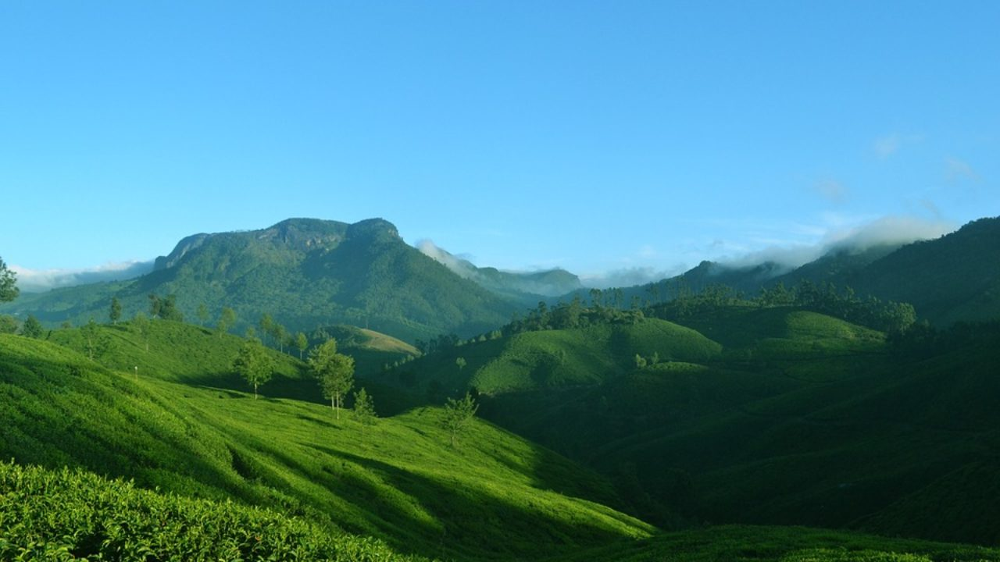

Introduction
Kausani (Hindi: कौसानी) is a hill station and Village situated in Bageshwar district in the state of Uttarakhand, India. It is famous for its scenic splendour and its spectacular 300 km-wide panoramic view of Himalayan peaks like Trisul, Nanda Devi and Panchchuli. Mahatma Gandhi called this place the 'Switzerland of India', due to similarity in landscapes.
History
During Independence of India in 1947, Kausani was situated in the Almora District till 15 September 1997 after which Bageshwar district was carved out of Almora district.[8] On 9 November 2000, the State of Uttarakhand was created from the Himalayan and adjoining northwestern districts of Uttar Pradesh.
Geography
Kausani is located in Bageshwar district of Uttarakhand, India at a distance of 40 km (25 mi) from Bageshwar city, the administrative Headquarter of Bageshwar District. Kausani is located 52 km (32 mi) north of Almora, a major hill station and the historical capital of Kumaon Kingdom. Kausani lies in the Kumaon division and is situated 123 km (76 mi) North-East of Nainital, the Headquarters of Kumaon. Nearby Towns include Garur (14 km (8.7 mi)) and Someshwar (12 km (7.5 mi)). It has an average elevation of 1,890 m (6,200 ft) above mean Sea Level. Kausani lies atop a ridge amidst dense pine trees overlooking Someshwar valley on one side and Garur and Katyuri valley[5] on the other on Almora-Bageshwar-Didihat Highway. Kausani is a part of the Lesser Himalayas, a region watered by rivers like Kosi, Gomti and Ramganga.Their banks, known as seras, are highly fertile.
Climate
Climate
Temperature ranges between 10 °C to 26 °C in summers.[14] Winters are quite cold with temperature ranging between 15 °C to 2 °C. Rainfall lies between Max 3048 mm and Min 1777 mm.
Economy
Many of Kausani’s men serve in the army – a phenomenon common in the northern hill towns of the country. The rest of the population depends on agriculture and allied activities, tourism and other small businesses for their livelihood. The local handloom factory produces shawls, woolen apparel and blankets. Besides handloom products, the factory sells other local artefacts and tea from Kausani’s tea estate. Kausani Tea Estate was established in 2000-2001 and produces 70,000 Kg Tea.
Lanuage
Kumaoni is spoken by majority however, Hindi and Sanskrit are the official languages.